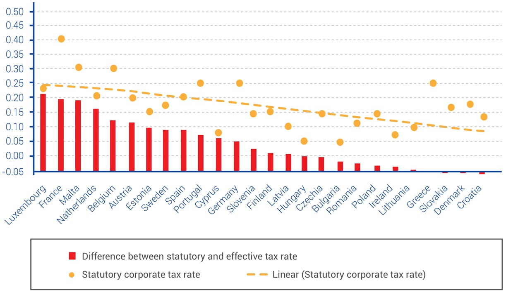
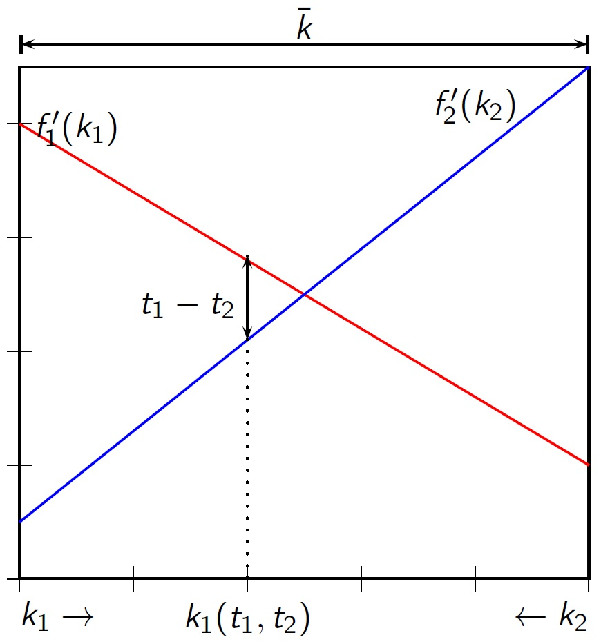
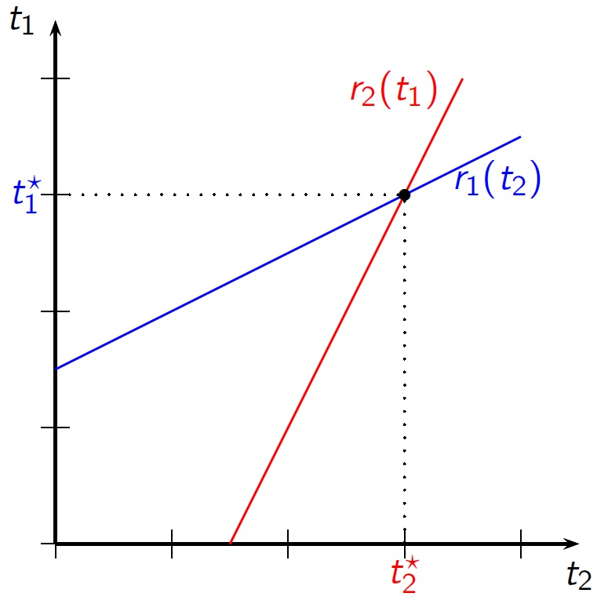
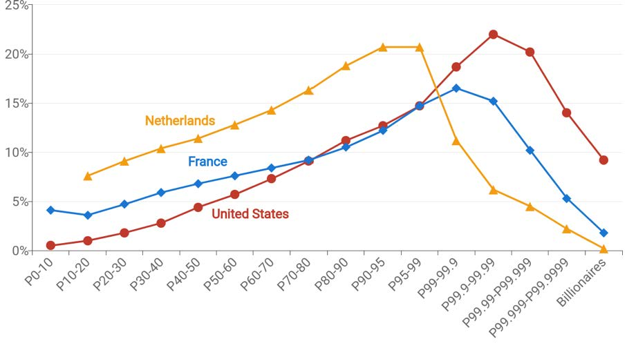
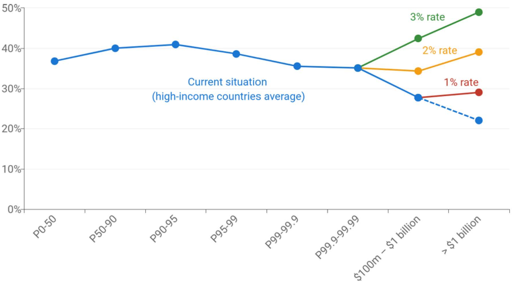
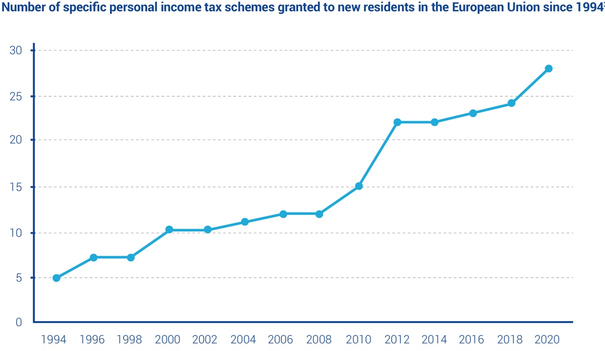
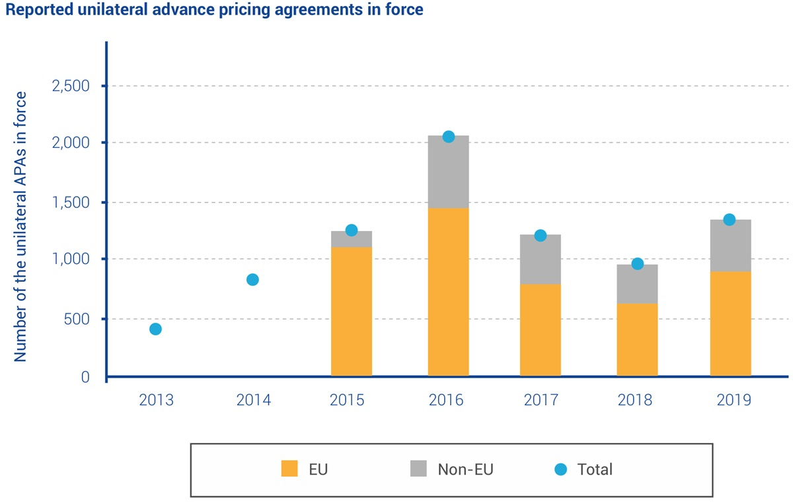
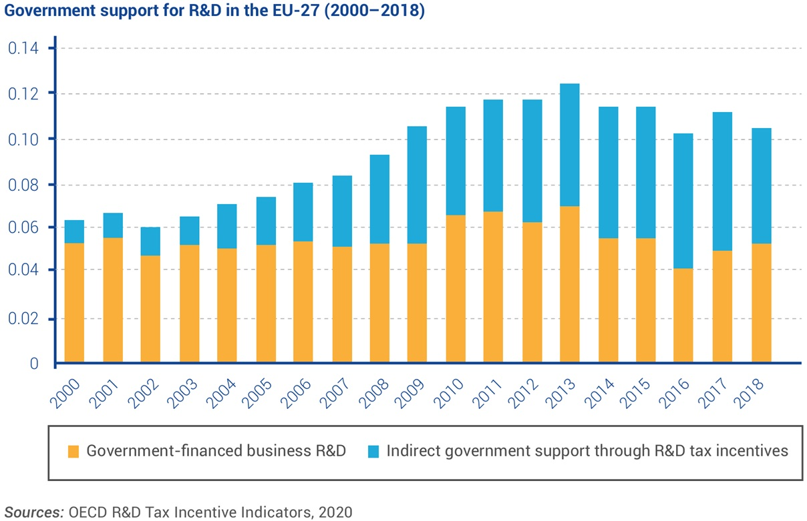
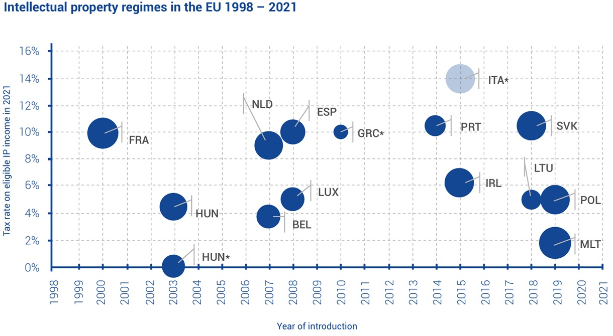

Public Economics
BSc Course
Wednesday, March 11, 2026
12 Tax Avoidance, Competition, Amnesties and Coordination
12.1 Tax Avoidance and Tax Competition
Tax Avoidance: The Problem
tax avoidance: legally substituting away from taxed activities
search for loopholes and violating the spirit, while abiding by the letter of the law
especially common with multinational enterprises (MNEs)
taking advantage of legal opportunities to minimize tax liability;
transactions and constructions designed to reduce tax liability;
wholly artificial arrangements, lack of economic substance;
popular:
transfer pricing on intra-group transactions for profit shifting to low-tax jurisdictions
brass plate/letterbox companies/conduit companies/shell corporations
12,400 conduit companies in NL, estimated 4,500b euros flow per year
benefiting from 100 bilateral tax treaties with about 100 countries
US Multinationals’ Taxation of Profit
{kind=link}
Statutory Corporate Tax Rates
Statutory vs Effective Corporate Tax Rates

12.2 Modeling Tax Competition
Small Open Economy Against ROW
- if taxes are levied on activities that are internationally highly mobile, then the tax base may erode in response to tax rates that are relatively high compared to other countries
- countries compete for revenue
- important: small open economies cannot influence the net-of-tax return to capital
- mechanism
- small country wants to increase capital tax revenue
- if capital moves out, labor productivity may decrease
- income to workers (residents) decreases more than capital tax revenue rises
- erosion of political support for capital income tax
assume homothetic production function \(Q = F(K,L)\) and devide everything by labor, obtaining \(q=f(k)\qquad\) (i.e., \(\qquad q=Q/L\), \(k=K/L\))
setting tax \(t\) will result in capital to move out until \[ \underbrace{f'(k) - t}_{\text{domestic net return to capital}} = \underbrace{\rho}_{\text{world return to capital}}\]
net income of workers (residents) \[\underbrace{f(k)}_{\text{production}} - \underbrace{f'(k)\cdot k}_{\text{capital~inc.}} + \underbrace{tk}_{\text{transfer}} = f(k) - \rho k\]
this will be maximized when \(t=0\) as else \(k\) flows out
Strategic Tax Competition Among Equals
now consider a world of two countries with a fixed supply of capital \(\bar{k} = k_1+k_2\) and the same production technology \(f()\); each country sets its own tax rate \(t_i, i=1,2\)
arbitrage condition \[\label{eq:taxarbitrage} \underbrace{f'(k_1) - t_1}_{\text{net return to capital ctr 1}} = \underbrace{f'(\bar{k}-k_1) - t_2}_{\text{net return to capital ctr 2}}\]
(also holds for country specific \(f()\)s)

- each country maximizes net income of its residents taking into account capital flows resulting from tax changes, e.g. \[\max_{t_1} y_1 = f(k_1) - f'(k_1)\cdot k_1 + t_1k_1\]
- \(k_1\) is a function of tax rates, and so is \(y_1=y_1(t_1,t_2)\)
- Nash strategy choice; best response function (taking \(t_2\) as given), \[\frac{\text{d}y_1(t_1,t_2)}{\text{d}t_1} = 0\]
- best responses per country \[t_1 = r_1(t_2) \qquad t_2 = r_2(t_1)\]
- equilibrium condition: \(t_1^\star = r_1(t_2^\star)\) and \(t_2^\star= r_2(t_1^\star)\)
- tax rates are strategic complements: lowering \(t_2\) attracts capital away from country 1 which in response cuts \(t_1\)

- cooperatively increasing taxes is beneficial to both countries:
countries can maximize the net income of their residents by fully taxing the mobile factor - Nash equilibrium involves inefficiently low taxes; loss in potential welfare is the efficiency cost of fiscal competition
- similar but not identical to prisoner’s dilemma (int’l tax harmonization as common good)
- equilibrium tax rates may not be zero (race to the bottom stays above zero taxation)
Unequal Neighbours
analysis so far abstracted from a number of relevant variables: difference in country size, production technologies, factor endowments etc.
in addition, small countries may gain at the expense of larger countries
key insight: with fixed world supply of capital \(\bar{k}\), the capital market clearing condition depends on the population shares \(s\) (of the bigger country 1) and \(1-s\) (smaller country 2), \[sk_1(t_1, t_2) + (1 - s)k_2(t_1, t_2) = \bar{k}.\]
arbitrage condition ([eq:taxarbitrage]) changes to \[f'(k_1) - t_1 = f'\left(\frac{\bar{k}}{1 - s}-\frac{sk_1(t_1, t_2)}{1 - s}\right) - t_2\]
differential calculus shows: both countries face a capital outflow after an increase in their own tax rate, but this outflow is less severe in the large country
the larger country 1 faces a less elastic tax base and thereby chooses a higher tax rate than the smaller country, so in equilibrium \(t_1 > t_2\)
the smaller country 2 employs more capital \((k_2 > k_1)\) and increases its per capita income; it is possible that the small country is better off with than without tax competition
corollary: with # countries \(\uparrow\), more intense competition and lower equilibrium tax rates
12.3 Tax Disclosure and Amnesty Programs
Voluntary Disclosure Programs (VDPs)
\(\ge 38\) countries have ‘permanent voluntary disclosure programs’—forgiving those that come clean and report their evaded taxes of the past
typically, not open to those already under investigation
typically, there is no fine
Why is this done?
gov’t saves administration, audit and detection cost
permanent repatriation of wealth from tax havens
complementary to whistleblower information
Langenmayr (2017, JPubE):
VDPs may increase number of tax evaders since they can turn themselves in later, unpunished
Beer and De Mooij (2024, Ec Analysis & Pol):
recommend unanticipated and generous (low or even negative penalty) VDPs
when anticipated, VDPs are not incentive compatible since they induce otherwise compliant taxpayers to evade tax
Crackdowns and Amnesties
crackdowns may help if culture selects evasion equilibrium (see slides L11)
however, problem not solved if tax payers respond by avoiding rather than evading
disclosure programs could help, shorter programs are known as tax amnesty
Norway: tax amnesty offers no penalties and no criminal sanctions to voluntary disclosers that help correctly assessing tax liability up to ten years back in time
information exchange agreements with a large number of tax havens, to reduce offshore tax evasion in 2008
1,500 taxpayers disclosed previously unreported foreign assets and income over the period 2008–2016
evasion went down; did avoidance increase?
Norwegian Tax Amnesty: Context and Design
Alstadsaeter et al. (2022, JPubE)
tax office data from a wealth tax;
matched to comprehensive information about cross-border bank transfers collected by customs authorities
for each transfer involving a personal account in a Norwegian bank, observe the transferred amount, the owner of the Norwegian account, and the country of the foreign bank account
tax avoidance information: add information from the corporate shareholder register to study the use of holding corporations to avoid taxes, and information from the population register to study migration
dynamic difference-in-difference estimates that express the change in behavior of disclosers over and above the change for nondisclosers with similar ex ante characteristics
effect picked up by ‘event time dummies’
since evaders disclosing offshore wealth in the beginning of year 0, one can incorporate the disclosed wealth into the tax return for year \(-1\)
year \(-2\) is the reference year (last year for which tax return has definitely been submitted at disclosure in year 0)
with perfect substitution between evasion and avoidance, should see no change in tax bases and tax liabilities, but a large increase in the use of avoidance techniques
with no substitution, should see substantial increases in tax bases and tax liabilities, but no change in the use of avoidance techniques
Norwegian Tax Amnesty: Results
Alstadsaeter et al. (2022, JPubE)


clear evidence against perfect substitution: sharp increase in reported net wealth, income and increase in taxes paid, persistent throughout four years after the amnesty
increase in avoidance is small if not zero along those margins
tax shifting of capital income to separate legal entities (holding companies)
investing in unlisted shares and real estate (below market value)
move tax residence to a foreign country
amnesty participants gradually repatriated the majority of the offshore assets after disclosure
wealth repatriation: dynamics that locks in repatriated wealth post-amnesty at home
over 5 years, repatriators transfer 60% of the disclosed assets to their domestic accounts;
75% of the increase in taxable wealth and
90% of theincrease in taxable income is domestic (even though not required!)
12.4 Towards(?) Tax Coordination
Policy Initiatives for Tax Coordination
G20: Base Erosion & Profit Shifting policy initiative (BEPS)
MNEs exploit incoherencies, intransparencies, and overt differences in tax systems to have their profits taxed where this is cheapest
many economies lose tax revenue due to an eroding tax base
BEPS aims to provide common framework for robust international tax standards
Joint G20/OECD Inclusive Framework (IF)
July 2024: 147 signatories
particular focus on digital economy
for MNE with global turnover of \(>\)20b€ and profitability \(>\)10%
2 Pillars:
Profit reallocation & nexus rules (apportionment)
Minimum corporate tax rate of 15%
Devereux and Vella (2014, FS): too much scope for interpretation in BEPS Action Plans, and too much latitude is left with firms and govt’s that pursue their own interests
Johannesen (2022, JPubE): game theory model; “the net welfare effect is unambiguously positive when the global minimum rate is so high that profit shifting ends” [otherwise] “the overall welfare effect [may be] negative in non-havens”
Framant et al, (2021, EU-Tax):
IF minimum tax rate of 15% is too low to stop tax competition and tax shopping
does not apply to medium-sized MNEs (\(\le\)750m € revenue)
IF minimum tax rate of 15% is further loosened by so-called carve-outs
MNEs can deduct 5% of value of tangible assets and payroll from tax base
22-37% of profits do not fall under the minimum tax
G20 (Brazilian Presidency)/EU Tax Observatory (Zucman)
in NL, billionaires mainly pay taxes indirectly through the corporations they own (\(\to\)corporate tax)
inclusive of this, effective tax rate for billionaires: ca 17%
global billionaire tax: min. 2% of wealth
3,000 individuals, $200-250b revenue
Effective income tax rates (% of pre-tax income)

Proposed minimum tax rates (% of pre-tax income)

Recent Trends in Special Tax Treatments




Reflection on Recent Developments
international tax competition has intensified along various margins that are not first-order addressed in tax-coordination efforts, and work to narrow the tax base
specific preferential tax regimes for individuals in the personal income tax
special regimes and idiosyncratic tax rulings for particular corporate tax payers
indirect R&D stimuli (tax breaks rather than overt R& D subsidies)
generous patent and IP tax treatment (so-called patent boxes)
increased danger of secrecy, intransparency, complexity and incoherency
Academic Estimates
Goolsbee (2000, JPE): short-run elasticity of taxable income with respect to the net-of-tax share of U.S. corporate executives \(>1\), but long-run elasticities \(\to 0\). Points to shifts in the timing of compensation responding to tax incentives.
Kleven et al (2013, QJE): clear reduced-form effects of reduction of wealth taxes for the rich in DK in the short and medium run, larger effects on the very wealthy than on the moderately wealthy. Long-run elasticity of taxable wealth with respect to the net-of-tax return is sizable at the top of the distribution.
Kleven et al (2013, AER): study effects of top tax rates on international migration of football players in 14 European countries, after 1985. Elasticity of the number of foreign players to the net-of-tax rate \(\approx 1\) (domestic players: \(\to 0\))
Akcigit at al (2016, AER): using patent holder data from the USPO and EPO, find that elasticity to the net-of-tax rate of the number of foreign superstar inventors \(\approx 1\) (domestic inventors \(\to 0\)).
12.5 Conclusions
Summary
businesses and rich individuals shop for lowest rates and use tax avoidance strategies
encouraged by jurisdictions competing for revenue, race to the bottom (maybe not to zero)
super-rich individuals respond clearly to tax rates, shifting taxable incomes and assets abroad
in case of evasion, gov’t can try to get them back with amnesty programs, attempting to repatriate the tax base
may work if amnesty is incidental but comprehensive (a shock that moves, rather than a system that tax players learn to game)
int’l tax harmonization is a missing global public good
present system not fit for a highly integrated, digitized, and mobile world
first int’l coordination efforts take long to materialize and are possibly half-hearted
BSc Course • Public Economics • © 2025-26 Stefan Hochguertel